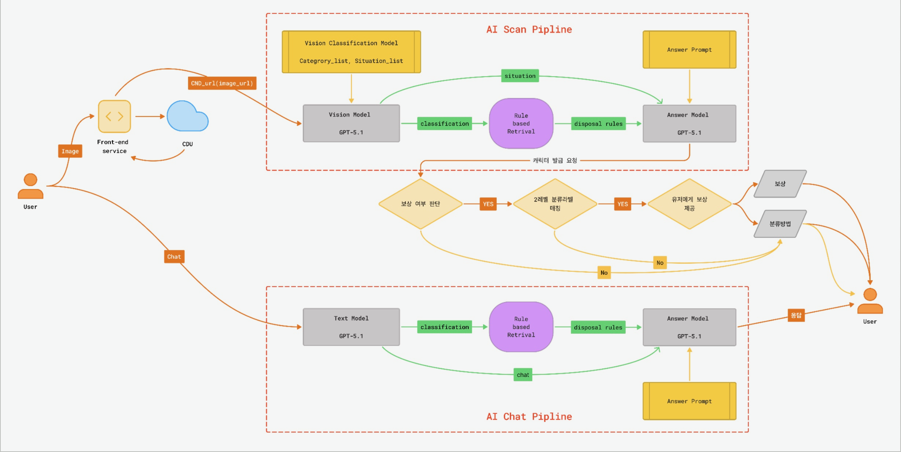

03
시스템 아키텍처 System Architecture
PWA 기반 프론트엔드와 연동되는 25-Node 분산 클러스터 아키텍처입니다. 25-Node distributed cluster architecture integrated with PWA-based frontend.
📱 서비스 흐름 (PWA → Backend → LLM)
📱 Service Flow (PWA → Backend → LLM)
PWA Client
React + Vite
React + Vite
→
Edge Layer
ALB + Istio
→
Auth
ext-authz
→
7 Services
FastAPI
→
Integration
MQ + Workers
→
LLM Agent
GPT/Gemini
👁️ Observability Layer — 모든 계층 실시간 모니터링
👁️ Observability Layer — Real-time monitoring across all layers
Prometheus
Grafana
Jaeger
Kibana
AlertManager
🤖 LLM Pipeline + Async SSE 🤖 LLM Pipeline + Async SSE
🧠 Scan AI Pipeline (Modular RAG)
🧠 Scan AI Pipeline (Modular RAG)
Vision LLM
Pre-Retrieval
→
Rule Engine
온누리 규정 KB
→
Answer LLM
Post-Retrieval
↑ inject
System Prompt
분류 기준
↑ inject
YAML KB
200+ 품목
↓ output
JSON Output
Structured
💡 각 모듈 클릭 시 상세 보기
💡 Click each module for details
🗺️ LLM Image Classification 파이프라인 상세
🗺️ LLM Image Classification Pipeline Details

🤖 Chat Agentic Workflow 진행 중
🤖 Chat Agentic Workflow In Progress
Intent
Multi-intent
→
Retriever
Tag-based
→
Eval
Phase 1-4
→
Fallback
3-tier Chain
→
Answer
Stream
↑
intent.txt
↑
*.yaml
↑
eval.txt
↑
Chain Config
↓
SSE Stream
🔁
Recursive Self-Improvement
💡
모듈 클릭 시 상세
Click for details
📦 Scan: Celery + Gevent 🔍 클릭하여 상세
📦 Scan: Celery + Gevent 🔍 Click for details
Celery Chain
4-Stage
→
RabbitMQ
Job Queue
→
Event Relay
3-Tier Redis
→
SSE
Client
Pool
gevent 100
🎯 SLA (VU 300)
99.9%
E2E p95
48.5s
Throughput
402 req/m
🤖 Chat: Taskiq + asyncio 진행 중 🔍 클릭하여 상세
🤖 Chat: Taskiq + asyncio In Progress 🔍 Click for details
Taskiq
asyncio-native
→
RabbitMQ
Job Queue
→
Event Relay
3-Tier Redis
→
SSE
Client
Workers
4 × 10 tasks
Timeout
120s
Checkpointer
RedisSaver
🏗️ 전체 시스템 아키텍처 🏗️ System Architecture Overview
📊 데이터 흐름 요약 📊 Data Flow Summary
| 흐름Flow | 경로Path | 프로토콜Protocol |
|---|---|---|
| 🌐 N-S Traffic | User → Route53 → ALB → Istio GW → ext-authz → APIs | HTTPS, gRPC |
| 🔄 E-W Sync | auth ↔ users, character → users (mTLS Envoy Sidecar) | gRPC |
| 🤖 Scan AI | Scan API → RabbitMQ → scan-worker (Vision→Rule→Answer→Reward) → OpenAI API | AMQP, Celery Chain |
| 💬 Chat Agent | Chat API → chat-worker (Intent→TagRetriever→EvalAgent→Fallback) → YAML inject + OpenAI API |
Taskiq, LangGraph |
| 🎭 Character Batch | scan-worker → character-match → character-worker (batch) → users-worker (UPSERT) → PostgreSQL | AMQP, Batch Insert |
| 📡 SSE Event | Workers → Redis Streams → Event Router → Pub/Sub → SSE GW → Client | XADD, PUBLISH, SSE |
| 🔔 Auth Relay | Auth API → Redis Fallback Outbox → auth-relay → RabbitMQ Fanout → auth-worker → Redis Blacklist | Fallback Outbox |
| 🔄 Cache Broadcast | RabbitMQ Fanout → ext-authz Blacklist + character-match Catalog (all replicas) Local Cache Sync | AMQP Fanout |
| 📊 Metrics | Envoy Sidecars → Prometheus → Grafana / KEDA Autoscaling | Prometheus scrape |
| 📝 Logs | All Pods (stdout) → Fluent Bit DaemonSet → Elasticsearch → Kibana | HTTP (ECS format) |
| 🔍 Traces | Envoy → OTel Collector → Jaeger (trace_id correlation, Kiali viz) | OTLP, Zipkin |